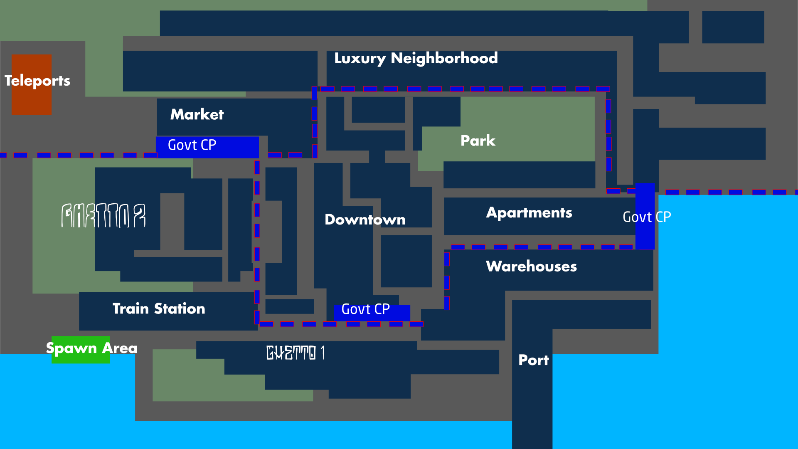
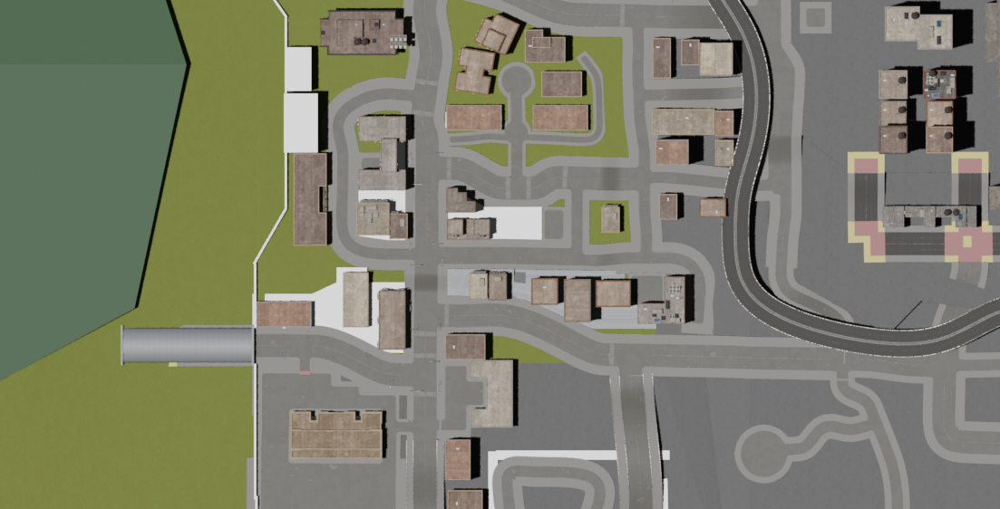
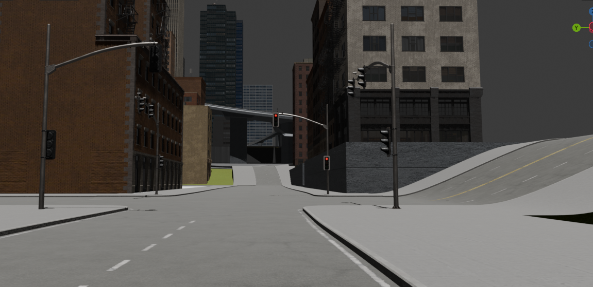
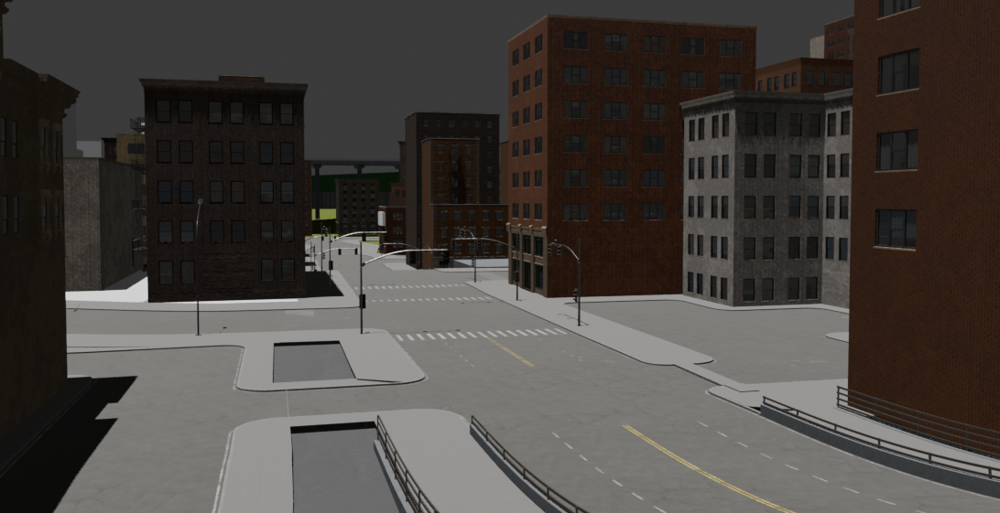
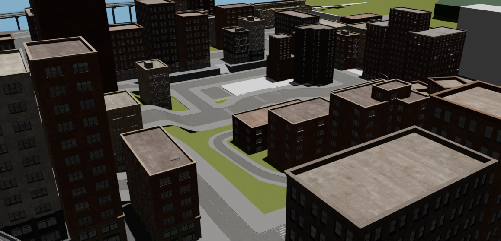
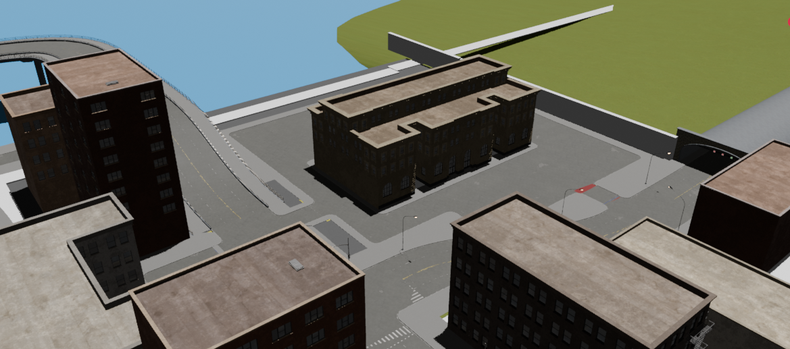

Since the last devlog
The last AfterDarkRP devlog on February 13, 2026 was about locking the MVP shape before launch. Since then, the project has widened into a much more complete sandbox stack.
This stretch of work added real depth across:
- job loadouts and native pickups,
- weapon shipments and money printer flow,
- mayor voting, police response, and prison handling,
- in-world panels and role-specific interactions,
- and the first full Weed Grower production chain.
The result is that AfterDarkRP no longer reads like a collection of separate systems. It is starting to behave like a city with overlapping role pressure, economy loops, and location-based gameplay.
Core loop progress
Several of the systems that were only partially wired in February are now substantially more usable.
- Job-defined loadouts are in place and
ns_fistsintegration is part of the normal baseline. - Weapon shipments are working and tied more cleanly into role restrictions and interactions.
- Money printers moved through multiple stability and UI passes and now fit the economy loop more naturally.
- Door logic was expanded and refined so ownership, interaction, and open direction are more predictable.
That combination matters because it strengthens the everyday DarkRP rhythm: claim space, manage risk, move goods, protect assets, and respond to pressure from other roles.
Law, crime, and government
The police and government side of the server has also moved well beyond its earlier placeholder phase.
- Mayor voting and law handling were expanded.
- Taze, arrest, prison, evidence, witness, and dispatch systems all received major work.
- Crime mission flow and escort-style mission timing were pushed much further toward playable state.
- Respawn, prison, and other supporting prefabs were added to reinforce the full arrest-to-resolution loop.
This is one of the biggest changes in the build. The city now has much better support for consequences, response, and escalation instead of just isolated criminal actions.
New production chain: Weed Grower
The largest single addition since the last devlog is the Weed Grower pipeline.
The system now spans:
- planters,
- soil and water supply,
- seeds and grow tents,
- cure stations and trim stations,
- packing stations, tray docking, and package handling,
- plus multiple dedicated UI panels and state tracking systems.
A large part of early March was spent stabilizing that chain, cleaning regressions, and improving runtime behavior with better caching for colliders and rigidbodies. The overall direction is clear: this is meant to be a real criminal production loop, not a one-step entity gimmick.
The current state looks strong through most of the planting-to-packing process, but the tray stage is still active work and not fully locked yet.
World and role expansion
Not every visible change was about one specific system. The broader sandbox also picked up:
- business-owner-facing world content,
- additional worker/vendor-style interactions,
- gang graffiti support,
- more in-world UI panels,
- and repeated scene/material passes across the active city spaces.
This is important because AfterDarkRP is increasingly being built around place, not just menus. The more systems that live in the world itself, the more the server feels like a roleplay space instead of a UI wrapper.
Map progress tracker
Current district progress is best understood as a focused rollout rather than equal coverage everywhere.
- Downtown: active early-focus district. Core world interactions, graffiti support, and city-facing role pressure are part of the current push.
- Ghetto 01: active early-focus district. This is one of the main initial target spaces for roleplay activity and system density.
- Train Station: present in the map structure, but not the primary early focus yet.
- Terrain / wider city shell: supporting world structure is in progress, but not the current center of gameplay priority.
Right now, the initial map emphasis is deliberately on Ghetto 01 and Downtown. That is where the team can make role friction, criminal routes, and world interactions feel intentional first before trying to finish every district at the same depth.
Recent visual notes
The latest capture pass gives a better read on where map work is actually landing. Ghetto 01 has the most visible shape right now, the broader map view is far enough along to communicate route intent, and the newer previews are still very much in a blockout phase even with geo nodes already doing useful work. Most materials are placeholder at this stage.






What comes next
The next sensible push is less about adding random features and more about hardening what is already here:
- finish the weed tray and packing edge cases,
- continue economy tuning across printers, shipments, and criminal production,
- keep tightening law/crime readability under live play,
- and deepen Ghetto 01 and Downtown until they can carry the first real play sessions.
This is a much larger build than the one described in the February 13 post. The difference now is not just more content. It is that the systems are starting to connect to place, role identity, and map focus in a way that makes the server feel coherent.